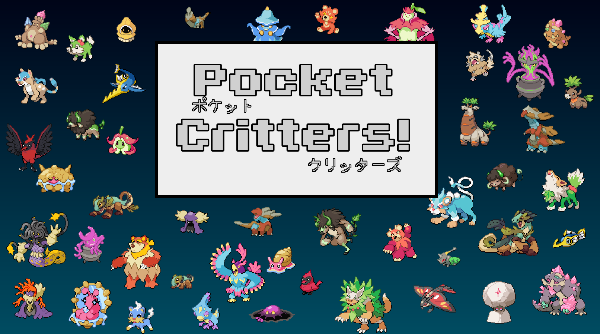
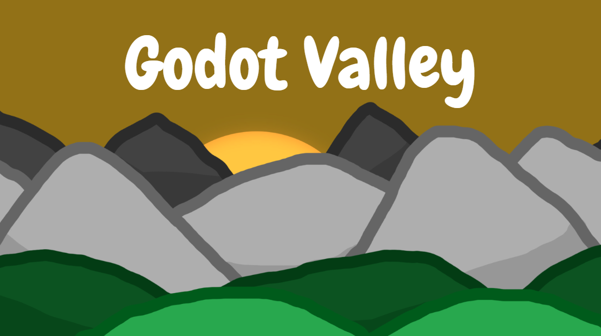
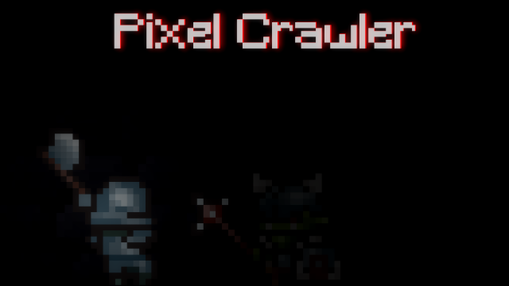
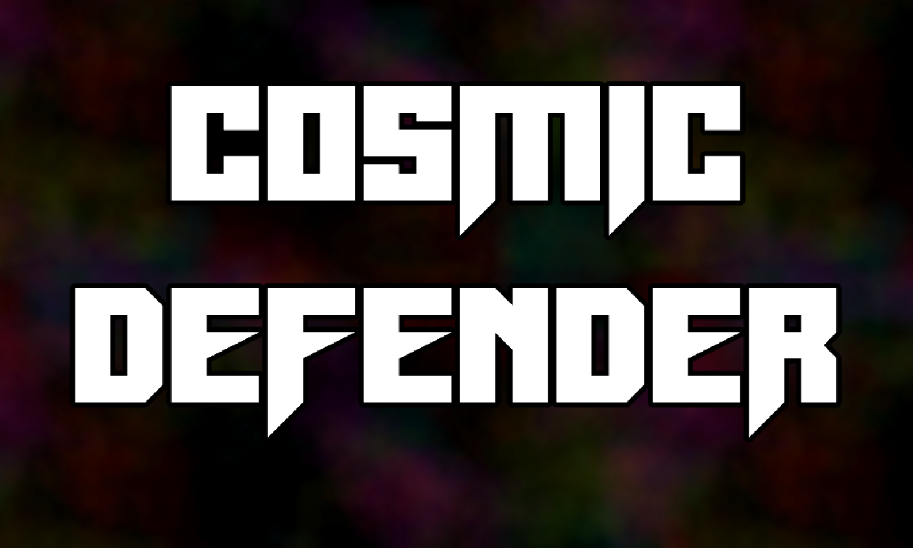
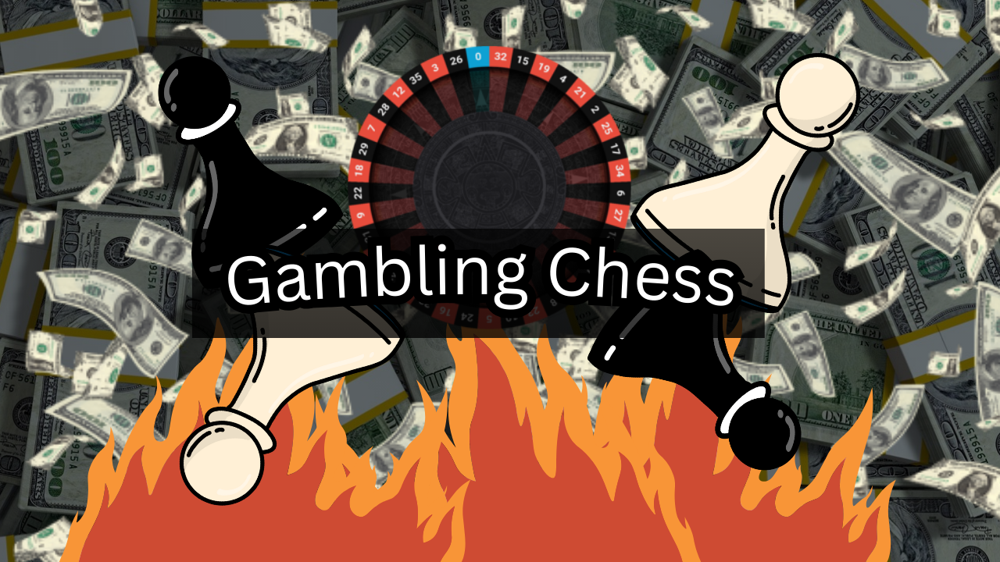

G
a
m
e
s
Some of the cool games I've made!
Pocket Critters
This is a game that I made to be similar to Pokemon! It is made with Fakemon from Pokéngine, with all custom moves!
The game isn't incredibly flushed out, but it has most of the key bits from Pokemon! It contains a full battling system, evolution, leveling up, trainer battles, and two biomes!
Come play the game for yourself!

Godot Valley
This is a game that I made to be similar to Stardew Valley! There is one big difference though. In my game, there is no grid system, and you can place things on specific plots of land!
This game isn't perfect, but it has many cool things. It has plants that you are able to water, with multiple growth stages, chickens that eat, drink, and lay eggs, a shop and many other cool things!
Come play the game for yourself!

Pixel Crawler
This is a roguelike game where you go through a dungeon produced with randomly placed pre-existing chunks!
You are able to be one of two classes as you go through the dungeon. You can encounter a variety of enemies, and earn a variety of loot at the end!
Come play the game for yourself!

Cosmic Defender
This is a roguelike similar to Megabonk, Brotato, and other hit games! In this game you have to defend against an alien invasion!
One cool feature of this game is it has Gambling! Whenever you would get a power up, you can risk it for the biscuit! Go against a boss in a double or nothing scenario!
Come play the game for yourself!

Gambling Chess
This is the ultimate version of chess! It is fun for all ages, and all audiences! It has a mix of strategy and gambling, making it a great game all around!
You are able to gamble for pieces at the beginning, and then gamble on different non-legal moves later in the game! You can even gamble your king and possible loose immediately!
Come play the game for yourself!

Return to the Sea